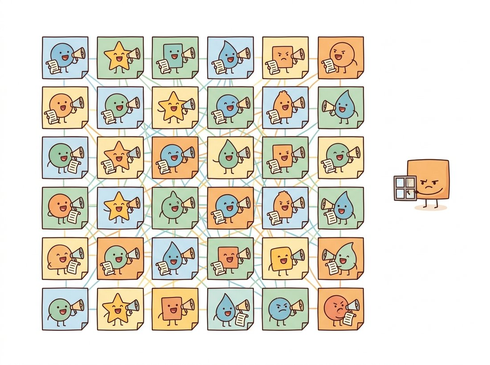
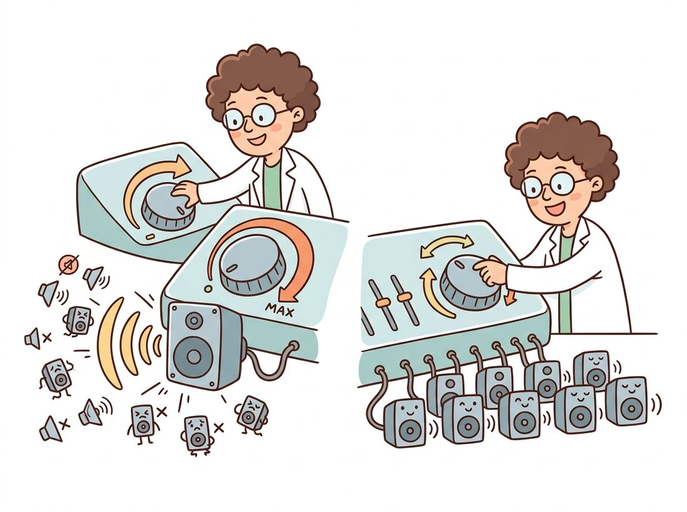

"A convolution asks each pixel, politely, what its neighbors are doing. Attention hands every patch a megaphone and a contact list. The room gets loud, but at least nobody is left out of the conversation."
An Attention Head That Reads the Whole Image at Once
Self-attention is a learned, content-dependent averaging: every element of a sequence computes a similarity to every other element, turns those similarities into weights with a softmax, and forms its new representation as a weighted sum of all the others. Unlike the fixed weights of a convolution, the attention weights are recomputed for every input from the data itself, and unlike the convolution they reach across the entire sequence in a single layer. This section builds that operation from the dot product up, scales it to multiple heads, and wraps it in the residual-and-normalize block that makes deep stacks trainable. Everything in the rest of the chapter is this block applied to patches. The illustration below captures the contrast this section turns on.

In the previous chapters you built vision entirely out of convolutions. This section steps outside that world to construct the one new primitive the chapter needs. The transformer was introduced for language in 2017, but the operation at its core, self-attention, is not linguistic at all; it is a general way to let the elements of any set exchange information. Our plan is to derive it carefully on a generic sequence of tokens, implement each piece in PyTorch with the tools from Chapter 18, and only then, in Section 22.2, decide that the tokens are image patches. Keeping the derivation token-agnostic is deliberate: the same block will reappear for segmentation masks, video frames, and text conditioning later in the book, and you want to recognize it as one idea, not five.
1. From Dot Product to Attention Beginner
Start with the most basic question attention answers: given a sequence of $N$ vectors, how should each one update itself using information from the others? A reasonable answer is "average in the others, but weight each by how relevant it is to me." The dot product is our relevance measure. If two vectors point in similar directions, their dot product is large; if they are orthogonal, it is zero. So a first sketch of attention is: for token $i$, compute the dot product with every token $j$, normalize those scores into weights that sum to one, and form the output as the weighted sum of all tokens.
The transformer refines this in one important way. Rather than dotting the raw tokens against each other, it first projects each token through three separate learned linear maps to produce a query, a key, and a value. The query is "what am I looking for", the key is "what do I offer", and the value is "what I will actually contribute if you attend to me." The relevance of token $j$ to token $i$ is the dot product of $i$'s query with $j$'s key; the output for $i$ is the weighted sum of every token's value. Splitting one vector into these three roles lets the network learn to ask and answer different things, which a single shared representation cannot do.
Think of one patch attending as a reader searching a library. The reader writes a request slip describing the topic wanted, that slip is the query. Every book wears a spine label advertising its subject, and those labels are the keys; matching the slip against each spine label (the query-key dot product) scores how relevant each book is. The reader does not then carry home the spine labels: they take the contents of the books, weighted by how well each label matched, and that content is the value. The crucial point the analogy makes concrete is why a book's label and its contents are kept separate: a book can be easy to find (a label that matches many queries) yet contribute little once opened, or hard to find yet rich inside, so the network learns the addressing (key) and the payload (value) independently.
Where this model breaks down: a library hands over whole books one at a time, whereas attention blends a weighted mixture of every value at once, and the slips, labels, and contents here are not fixed catalog entries but vectors relearned for every image.
Written compactly, with all queries stacked into a matrix $Q$, all keys into $K$, and all values into $V$, the entire operation is
where $d_k$ is the dimension of the query and key vectors. The matrix $QK^\top$ holds every query-key dot product, one row per query; the softmax is applied along each row so the weights for one query sum to one; multiplying by $V$ forms the weighted sums. The division by $\sqrt{d_k}$ is the "scaled" in scaled dot-product attention, and it matters more than it looks. The dot product of two random $d_k$-dimensional vectors has variance proportional to $d_k$, so for large $d_k$ the scores grow large, the softmax saturates into a near one-hot spike, and its gradient nearly vanishes. Dividing by $\sqrt{d_k}$ holds the score variance near one and keeps the softmax in its responsive range.
The size of the effect is easy to underestimate. At the base ViT's head width $d_k = 64$, raw scores have a standard deviation of about $\sqrt{64} = 8$, so a typical query-key pair lands eight units apart, and $e^{8}$ is roughly $3000$ times $e^{0}$. One slightly-above-average key would therefore swallow almost the entire softmax row before training even begins. Dividing by $\sqrt{d_k} = 8$ shrinks that spread back to a standard deviation near one, where the softmax still listens to every patch. The whole stability of attention turns on that single factor of eight. Figure 22.1.1 traces these matrices through the computation, and the illustration below gives the intuition for that scale factor.

The code below implements exactly this formula on a batch of sequences. Read it against the figure: Q @ K.transpose is the score matrix, the scaling and softmax follow, and the final matmul with V produces the output.
# Scaled dot-product attention from the formula up: score every query
# against every key, normalize the scores with a softmax, then take the
# value-weighted sum. Passing one tensor as Q, K, and V gives self-attention.
import torch
import torch.nn.functional as F
def scaled_dot_product_attention(Q, K, V):
"""Q, K, V: (batch, seq_len, d_k). Returns (batch, seq_len, d_k) and weights."""
d_k = Q.size(-1)
scores = Q @ K.transpose(-2, -1) / d_k ** 0.5 # (batch, seq, seq)
weights = F.softmax(scores, dim=-1) # each query row sums to 1
output = weights @ V # (batch, seq, d_k)
return output, weights
# A toy batch: 1 sequence of 4 tokens, each of dimension 8.
torch.manual_seed(0)
X = torch.randn(1, 4, 8)
out, attn = scaled_dot_product_attention(X, X, X) # self-attention: Q=K=V=X
print("output shape:", out.shape) # output shape: torch.Size([1, 4, 8])
print("attention rows sum to:", attn.sum(-1)) # tensor([[1., 1., 1., 1.]])A convolution kernel holds a fixed set of weights, learned once and applied identically to every position of every image. Self-attention computes its weights on the fly from the input itself, so the same layer mixes a portrait differently than it mixes a landscape, and it does so across the whole image rather than a small window. This is the single most important difference in the chapter. It is the source of the transformer's flexibility and, as we will see in Section 22.5, the source of its appetite for data: weights that are not built in must be learned.
Because each attention row passes through a softmax and sums to one, it is tempting to read a weight of $0.4$ on some patch as "this patch is 40% important" or as a confidence that attending there is the right thing to do. It is neither. The weight is only a mixing coefficient: the fraction of patch $j$'s value vector that gets added into patch $i$'s output for this one head. A patch can receive a large weight simply because its key happens to align with the query in a direction that later layers will partly cancel, and a patch with a tiny weight can still dominate the output if its value vector has a large norm. The softmax normalizes the geometry of the dot products, not the usefulness of the information. Keep this distinction in mind for Section 22.2, where the same weights get visualized as if they were a saliency map.
2. Multi-Head Attention Intermediate
A single attention operation forces every token to summarize all of its relationships into one weighted average. That is limiting: a patch of an image might want to attend to texture in one sense and to global shape in another, and one softmax cannot represent both at once. Multi-head attention solves this by running several attention operations in parallel, each with its own learned query, key, and value projections, on lower-dimensional slices of the representation. Each head can specialize, one tracking local edges, another long-range layout, and their outputs are concatenated and passed through a final linear projection.
Concretely, with model dimension $d$ and $h$ heads, each head works in dimension $d_k = d / h$. Splitting this way keeps the total width fixed: $h$ heads of width $d/h$ recombine to width $d$, so multi-head attention costs essentially the same as one full-width head, it just spends that budget on several narrower views instead of one wide one. We project the input to $Q$, $K$, $V$ of full width $d$, reshape into $h$ heads of width $d_k$, run attention independently per head, concatenate back to width $d$, and apply an output projection $W_O$. The math is
Figure 22.1.2 traces this split-attend-concatenate path, and the implementation below packs all heads into single weight matrices for efficiency and reshapes to expose the head dimension, which is how every production library does it.
# Multi-head attention: project to Q, K, V with one fused matrix, split the
# width into independent heads so each can specialize, attend per head, then
# concatenate and re-project. The output shape matches the input so blocks stack.
import torch
import torch.nn as nn
import torch.nn.functional as F
class MultiHeadAttention(nn.Module):
def __init__(self, dim, num_heads):
super().__init__()
assert dim % num_heads == 0, "dim must be divisible by num_heads"
self.num_heads = num_heads
self.d_k = dim // num_heads
self.qkv = nn.Linear(dim, dim * 3) # one matrix produces Q, K, V together
self.proj = nn.Linear(dim, dim) # output projection W_O
def forward(self, x):
B, N, D = x.shape
qkv = self.qkv(x).reshape(B, N, 3, self.num_heads, self.d_k)
qkv = qkv.permute(2, 0, 3, 1, 4) # (3, B, heads, N, d_k)
q, k, v = qkv[0], qkv[1], qkv[2]
scores = q @ k.transpose(-2, -1) / self.d_k ** 0.5
attn = F.softmax(scores, dim=-1)
out = (attn @ v).transpose(1, 2).reshape(B, N, D) # merge heads
return self.proj(out)
mha = MultiHeadAttention(dim=64, num_heads=8)
x = torch.randn(2, 16, 64) # batch 2, 16 tokens, dim 64
print("output shape:", mha(x).shape) # output shape: torch.Size([2, 16, 64])qkv projection. The 64-dimensional input is split into 8 heads of width 8, attended independently, and recombined, preserving the input shape so the block can be stacked.The roughly fifteen lines above exist so you understand the mechanics. In production, PyTorch's scaled_dot_product_attention fuses the scale, softmax, and value matmul into a single kernel that is dramatically faster and far more memory-efficient (it dispatches to FlashAttention when the hardware allows), turning the body of forward into one line:
from torch.nn.functional import scaled_dot_product_attention as sdpa
# q, k, v shaped (B, heads, N, d_k); fused scale + softmax + matmul:
out = sdpa(q, k, v) # no explicit scores tensor materialized in memory(B, heads, N, d_k) tensors, sdpa collapses the scale, softmax, and value matmul of the hand-rolled block into one FlashAttention-backed kernel that never materializes the full score matrix.The library handles the $\sqrt{d_k}$ scaling, an optional causal or padding mask, and the memory-efficient streaming softmax that never builds the full $N \times N$ score matrix. For long sequences this is the difference between fitting in GPU memory and not, and it is why you should reach for sdpa (or nn.MultiheadAttention) rather than the hand-rolled version once you have understood it.
If multi-head attention sounds like a committee, that is almost exactly what trained heads turn out to be. Probing studies find that different heads quietly specialize: some become "positional" heads that mostly attend to the patch just above or beside the query, some lock onto the class token, and a few learn nothing useful and could be pruned away with no loss of accuracy. The committee even has its slackers. The one-line mnemonic worth keeping is that one head is a single opinion; $h$ heads are a panel that votes in parallel and then files a joint report through $W_O$.
3. The Transformer Block: Residuals, Norm, and an MLP Intermediate
Attention by itself is one operation; a transformer is a stack of blocks, and each block surrounds attention with three things you already know from Chapter 18 and Chapter 19: a residual connection, layer normalization, and a small feed-forward network (an MLP). The residual connection lets the input flow around each sub-layer, so gradients reach early layers cleanly and very deep stacks remain trainable, exactly the function residuals serve in the ResNet of Chapter 20. Layer normalization stabilizes the scale of activations across the feature dimension. The MLP, applied independently to each token, gives the block the non-linear capacity to transform what attention has gathered; transformers use GELU (the Gaussian Error Linear Unit) rather than the ReLU of Chapter 18, a smooth activation that gates each input by the probability a Gaussian sample falls below it, which trains more stably in this setting.
Modern transformers use the pre-norm arrangement: the normalization is applied before each sub-layer rather than after, which makes optimization far more forgiving and removes the need for the learning-rate warmup tricks that the original post-norm design required. A pre-norm block computes
Read that as: normalize, attend, add back; normalize, transform, add back. The residual stream (the running sum $x$) is never overwritten, only added to, which is why information from the patch embedding can reach the final layer directly. Figure 22.1.3 shows the two-sublayer block, and the code that follows assembles it from the multi-head attention of subsection 2.
# A pre-norm transformer block: LayerNorm then attention with a residual add,
# then LayerNorm then a 4x-expansion MLP with a residual add. Normalizing before
# each sub-layer keeps deep stacks trainable without learning-rate warmup.
import torch.nn as nn
class TransformerBlock(nn.Module):
def __init__(self, dim, num_heads, mlp_ratio=4.0, dropout=0.0):
super().__init__()
self.norm1 = nn.LayerNorm(dim)
self.attn = MultiHeadAttention(dim, num_heads)
self.norm2 = nn.LayerNorm(dim)
hidden = int(dim * mlp_ratio)
self.mlp = nn.Sequential(
nn.Linear(dim, hidden), nn.GELU(), # GELU is the ViT-standard activation
nn.Dropout(dropout),
nn.Linear(hidden, dim), nn.Dropout(dropout),
)
def forward(self, x):
x = x + self.attn(self.norm1(x)) # pre-norm attention sub-layer + residual
x = x + self.mlp(self.norm2(x)) # pre-norm MLP sub-layer + residual
return x
block = TransformerBlock(dim=64, num_heads=8)
import torch
print("block output:", block(torch.randn(2, 16, 64)).shape) # torch.Size([2, 16, 64])x = x + ... lines are the residual stream of Figure 22.1.3; the MLP expands the dimension fourfold with a GELU non-linearity before projecting back, the standard ViT feed-forward.That block is the entire reusable engine of the chapter. Stack $L$ of these, feed them a sequence of token vectors, and you have a transformer encoder. The only thing left, the thing that turns this language-shaped machine into a vision model, is deciding what the tokens are and how to inject the spatial information that the permutation-invariant attention throws away. That is the subject of Section 22.2.
4. Why This Is Not a Convolution Advanced
It is worth making the contrast with the convolution precise, because the whole chapter turns on it. A convolution has three properties baked in by its very structure: locality (each output depends only on a small input neighborhood), weight sharing (the same kernel slides over every position, so the operation is translation-equivariant), and a fixed receptive field that grows only by stacking layers. These are inductive biases: assumptions about images that are true often enough to be enormously helpful, and that let a CNN learn from tens of thousands of images.
Self-attention discards all three. There is no locality: token $i$ attends to all $N$ tokens equally at the start, and the layer's effective neighborhood is the whole image from the very first block. There is weight sharing, but only of a different kind. The projection matrices are shared across positions, yet the attention pattern itself is not fixed; it is recomputed for every input. And the receptive field is global immediately, not grown over depth. A ViT therefore starts with almost no built-in knowledge that nearby pixels are related; it must learn that fact, if it is useful, from data. The cost is paid in two currencies. First, data: Section 22.3 is entirely about how to pay it. Second, compute: because every token attends to every other, the cost of self-attention is quadratic in the number of tokens.
For a $224 \times 224$ image cut into $16 \times 16$ patches, $N = 196$ tokens, and $N^2$ is manageable. Push to high-resolution dense prediction with thousands of tokens and the quadratic term dominates, which is precisely the problem the windowed attention of Section 22.4 exists to solve. The practical example below shows how this quadratic wall bites a real team.
Who: a four-person team building a layout-analysis model for scanned legal documents, 2024. Situation: their first prototype was a plain ViT, and it worked beautifully on $224 \times 224$ thumbnails of each page. Problem: the fine print they actually needed to read disappeared at that resolution, so they raised the input to $1024 \times 1024$. With $16 \times 16$ patches that is $4096$ tokens, and the $N^2$ attention matrix became roughly $4096^2 \approx 16.8$ million entries per head per layer; training crashed with out-of-memory errors and inference slowed to a crawl. Decision: rather than buy bigger GPUs, they switched the backbone to a Swin Transformer, whose window attention (the subject of Section 22.4) computes attention inside $7 \times 7$ windows and shifts them between layers, making the cost linear in the token count. Result: the high-resolution model trained on the same hardware, and accuracy on small text rose sharply because the model could finally see it. Lesson: the global reach of plain self-attention is a feature at $196$ tokens and a liability at $4096$; knowing the $O(N^2)$ scaling tells you in advance which design to pick before you hit the memory error.
Removing the $O(N^2)$ bottleneck is an active research front. FlashAttention (Dao et al., 2022, arXiv:2205.14135) and its 2023 to 2024 successors do not change the math but compute exact attention with an IO-aware streaming algorithm that never materializes the full score matrix, cutting memory from quadratic to linear and giving large speedups; it is the kernel behind PyTorch's scaled_dot_product_attention. A parallel line replaces softmax attention with cheaper approximations: linear attention and state-space models such as the Mamba and Vision Mamba (Vim, 2024) family recast sequence mixing as a recurrence with linear cost, and have started to match ViTs on classification while scaling to far longer token sequences. Whether these alternatives or windowed attention (Section 22.4) become the default for high-resolution vision is one of the open questions of 2025 and 2026.
The whole section turns on one claim, that attention mixes globally and content-dependently while a convolution mixes locally and identically, and you can make that claim visible in a small interactive demo. Build a notebook (or a short Streamlit page) that takes one image, splits it into a grid of patches, and on a click of any patch shows two side-by-side overlays: the fixed $3 \times 3$ neighborhood a convolution would read, and the full softmax attention row that the MultiHeadAttention block of subsection 2 produces for that patch as query. Add a slider for the head index so the viewer can watch different heads attend to different things, and a toggle that removes the $1/\sqrt{d_k}$ scale factor so they watch the softmax collapse onto one patch, the effect Exercise 22.1.1 asks you to reason about. It reuses only the from-scratch code already in this section, needs no training, and turns an abstract contrast into something a reader can poke at. Difficulty: intermediate, about two hours, and it makes a memorable portfolio piece or teaching aid for the very idea this chapter is built on.
Suppose you removed the $1/\sqrt{d_k}$ factor from scaled dot-product attention and used a large head dimension such as $d_k = 256$. Explain in two or three sentences what happens to the magnitude of the dot-product scores, to the shape of the softmax output, and to the gradients flowing back through the softmax. Then describe a single experiment with the toy code in subsection 1 that would let you observe the softmax saturating: what would you measure, and what would you expect to see as $d_k$ grows?
Extend the MultiHeadAttention class to also return the per-head attention weights (shape (B, heads, N, N)). Construct a sequence of 9 tokens arranged conceptually as a $3 \times 3$ grid, run one untrained block, and use matplotlib.imshow to display the $9 \times 9$ attention matrix for one head as a heatmap. The pattern will be near-uniform because the weights are random; now hand-set one query's key projection so it strongly matches one specific key, re-run, and confirm that the corresponding row of the heatmap spikes. This is the same visualization researchers use to interpret where a trained ViT looks.
For a ViT processing a $384 \times 384$ image with $16 \times 16$ patches, compute the number of tokens $N$ and the number of entries in a single head's score matrix. Repeat for $48 \times 48$ patches. Using the $O(N^2 d)$ versus $O(N k^2 d)$ formulas of subsection 4, estimate the ratio of self-attention cost to convolution cost (take $k = 3$, $d = 768$) at each patch size, and write one paragraph explaining why larger patches make a ViT cheaper but coarser, connecting the trade-off to the receptive-field discussion of Chapter 19.